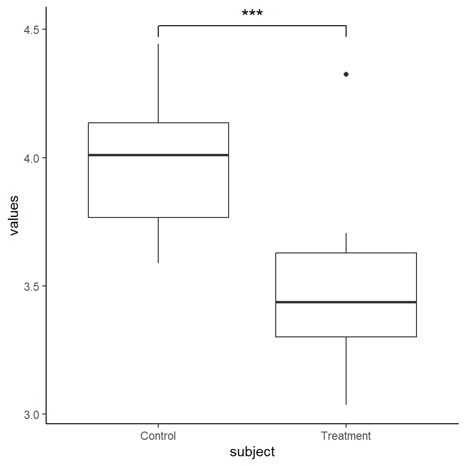

library(tidyverse)9 Labeling Significance
Labeling significance on plots such as boxplots or bar graphs is typically denoted using stars or letters (sometimes called Tukey’s signficance letters). These are placed either above one or more of the boxplots, or are placed in between and connected via lines. There is always a danger when adding this information that it becomes cluttered and distracting, so it is important to make clear design choices. Below are some ways of labeling significance on boxplots and bar graphs.
9.1 Adding stars to plots
9.2 Adding p-values to plots
9.3 Adding Tukey’s Significance Letters
One-Way ANOVA example
Let’s create some random data. We’ll make a dataframe of six groups.
set.seed(10)
df <- data.frame(
value = c(rnorm(n = 10, mean = 10, sd = 1.8),
rnorm(n = 12, mean = 11, sd = 1.0),
rnorm(n = 14, mean = 13, sd = 1.1),
rnorm(n = 16, mean = 15, sd = 1.2),
rnorm(n = 12, mean = 14, sd = 2.2),
rnorm(n = 10, mean = 10, sd = 1.0)),
categ = c(rep("A",10), rep("B",12), rep("C",14),
rep("D",16), rep("E",12), rep("F",10)
)
)
head(df) value categ
1 10.033743 A
2 9.668345 A
3 7.531605 A
4 8.921498 A
5 10.530181 A
6 10.701630 AWe can plot the basic boxplot of these data like this:
ggplot(df, aes(x=categ, y=value)) +
geom_boxplot() +
theme_classic()
To compare significance differences between groups, we could run Tukey post-hoc tests using Honestly Signficant Differences. This is done using the TukeyHSD() function in base R, but using the HSD.test() function from the agricolae R package, we can get the letter notation we need directly.
This code runs the post hoc test and the groups part of it gives us the letter notations we need:
library(agricolae)
hsd <- HSD.test(aov(value ~ categ, data=df), "categ", group=T)
hsd$statistics
MSerror Df Mean CV
1.624327 68 12.19191 10.45357
$parameters
test name.t ntr StudentizedRange alpha
Tukey categ 6 4.147238 0.05
$means
value std r Min Max Q25 Q50 Q75
A 9.116818 1.2598083 10 7.071989 10.70163 8.099472 9.441861 9.942394
B 11.076193 0.9758832 12 8.814713 12.10178 10.672247 11.286163 11.798216
C 12.218867 0.9310972 14 10.669033 14.06542 11.513617 12.250668 12.846258
D 14.710048 0.8877416 16 12.889096 16.30386 14.161383 14.604540 15.317899
E 14.346442 2.2162032 12 11.277292 18.70309 12.477597 14.694213 15.311768
F 9.953696 0.9761422 10 8.569573 11.21613 9.093364 10.081209 10.692454
$comparison
NULL
$groups
value groups
D 14.710048 a
E 14.346442 a
C 12.218867 b
B 11.076193 bc
F 9.953696 cd
A 9.116818 d
attr(,"class")
[1] "group"To add these letters on to the plot, we need to decide where to put them. The x coordinate will be the mid point of each category (which can just be the name of the group), and the y coordinate will be above the maximum value of that group. But note that the groups in the summary output are reorganized from highest median value to lowest. I find it easiest to add these to our summary output in the appropriate order.
df.sum <- df %>%
group_by(categ) %>%
summarize(maxval = max(value),
med = median(value),
uq = quantile(value, .75)) %>%
arrange(-med)
df.sum$letters <- hsd$groups$groups
df.sum# A tibble: 6 x 5
categ maxval med uq letters
<chr> <dbl> <dbl> <dbl> <chr>
1 E 18.7 14.7 15.3 a
2 D 16.3 14.6 15.3 a
3 C 14.1 12.3 12.8 b
4 B 12.1 11.3 11.8 bc
5 F 11.2 10.1 10.7 cd
6 A 10.7 9.44 9.94 d This code plots the letters above the boxplots at a y coordinate 0.2 higher than the max value.
ggplot(df,aes(x=categ,y=value))+
geom_boxplot()+
geom_text(data=df.sum,
aes(x=categ,y=0.2+maxval,
label=letters)) +
theme_classic() +
xlab("Category")We should reorder the plot though to make it more readable:
ggplot(df,aes(x=reorder(categ,-value,median),y=value))+
geom_boxplot()+
geom_text(data=df.sum,
aes(x=categ,y=0.2+maxval,
label=letters)) +
theme_classic() +
xlab("Category")
We can nudge the letters up a bit using vjust=0:
ggplot(df,aes(x=reorder(categ,-value,median),y=value))+
geom_boxplot()+
geom_text(data=df.sum,
aes(x=categ,y=0.2+maxval,
label=letters), vjust=0) +
theme_classic() +
xlab("Category")
Alternatively, you may wish to plot the letters to the side of the upper quartile. I don’t like this very much, but it’s an option. I also make the letters bold in this example using fontface="bold".
ggplot(df,aes(x=reorder(categ,-value,median),y=value))+
geom_boxplot()+
geom_text(data=df.sum,
aes(x=categ,y=uq,
label=letters,
hjust = -1,
vjust = -0.8,
fontface = "bold"), vjust=0) +
theme_classic() +
xlab("Category")
Just for fun, here I’m including aes(fill = factor(..middle..))) and scale_fill_brewer(palette = "Reds") to make the colors of the boxplots a shade of red that is equivalent to their categorical position.
ggplot(df,aes(x=reorder(categ,-value,median),y=value))+
geom_boxplot(aes(fill = factor(..middle..)))+
geom_text(data=df.sum,
aes(x=categ,y=0.2+maxval,
label=letters), vjust=0) +
theme_classic() +
xlab("Category") +
scale_fill_brewer(palette = "Reds") +
theme(legend.position = 'none')
This approach using geom_text() to add letters to a plot can be modified for any statistical test.